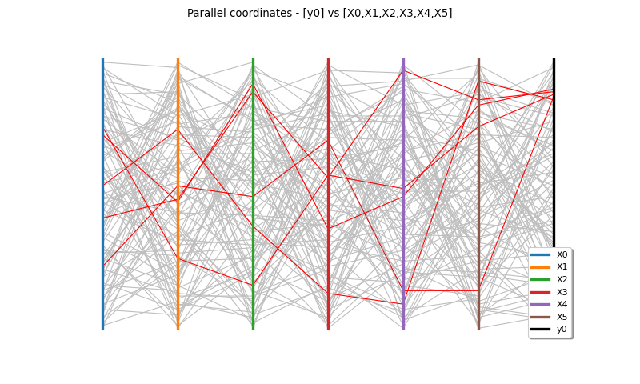

DrawParallelCoordinates¶
(Source code, png)
{kind=link}

- DrawParallelCoordinates(inputSample, outputSample, minValue, maxValue, color, quantileScale=True)¶
Draw a parallel coordinates plot.
- Parameters:
- inputSample2-d sequence of float of dimension

Input sample
 .
.- outputSample2-d sequence of float of dimension

Output sample
 .
.- Ymin, Ymaxfloat such that Ymax > Ymin
Values to select lines which will colore in color. Must be in
![[0,1]]() if quantileScale=True.
if quantileScale=True.- colorstr
Color of the specified curves.
- quantileScalebool
Flag indicating the scale of the Ymin and Ymax. If quantileScale=True, they are expressed in the rank based scale; otherwise, they are expressed in the
-values scale.
- inputSample2-d sequence of float of dimension
- Returns:
- graph
Graph The graph object
- graph
Notes
Let’s suppose a model
 , where
, where
 .
The parallel coordinates graph enables to visualize all the combinations of the input
variables which lead to a specific range of the output variable.
.
The parallel coordinates graph enables to visualize all the combinations of the input
variables which lead to a specific range of the output variable.Each column represents one component
 of the input vector
. The last column represents the scalar output variable
.
of the input vector
. The last column represents the scalar output variable
.For each point
 of inputSample, each component
of inputSample, each component  is noted on its respective axe and the last mark is the one which corresponds
to the associated
is noted on its respective axe and the last mark is the one which corresponds
to the associated  . A line joins all the marks. Thus, each point of
the sample corresponds to a particular line on the graph.
. A line joins all the marks. Thus, each point of
the sample corresponds to a particular line on the graph.The scale of the axes are quantile based : each axe runs between 0 and 1 and each value is represented by its quantile with respect to its marginal empirical distribution.
It is interesting to select, among those lines, the ones which correspond to a specific range of the output variable. These particular lines selected are colored differently in color. This specific range is defined with Ymin and Ymax in the quantile based scale of
or in its specific scale. In
that second case, the range is automatically converted into a quantile based
scale range.Examples
>>> import openturns as ot >>> from openturns.viewer import View
Generate a random sample from a Normal distribution:
>>> ot.RandomGenerator.SetSeed(0) >>> inputSample = ot.Normal(2).getSample(15) >>> inputSample.setDescription(['X0', 'X1']) >>> formula = ['cos(X0)+cos(2*X1)'] >>> model = ot.SymbolicFunction(['X0', 'X1'], formula) >>> outputSample = model(inputSample)
Draw a parallel plot:
>>> parplot = ot.VisualTest.DrawParallelCoordinates(inputSample, outputSample, 1.0, 2.0, 'red', False) >>> View(parplot).show()